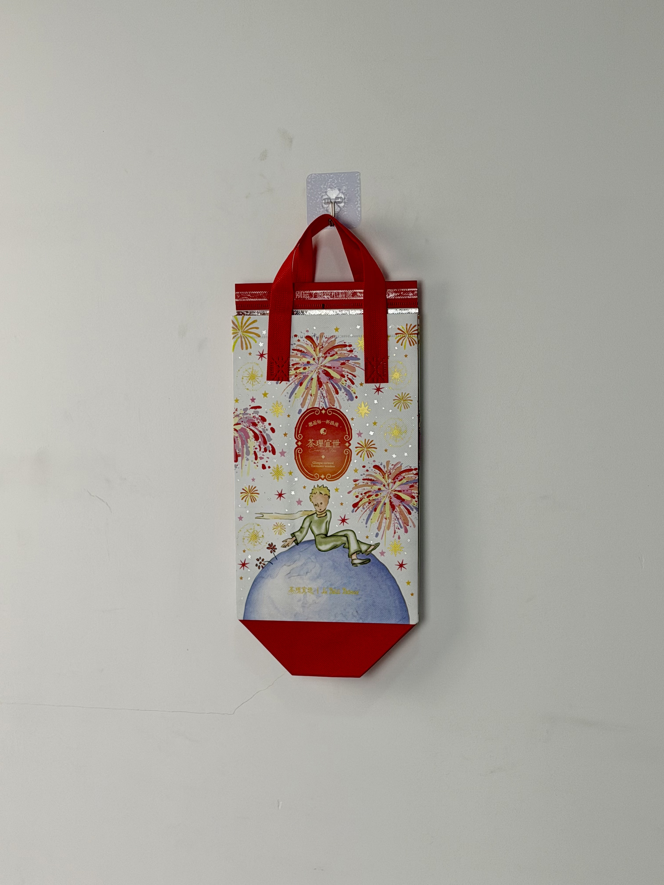

A magical collaboration thermal bag bringing Saint-Exupery's Little Prince to China's tea-delivery market, featuring fireworks, planetary wonder, and the brand's signature romantic aesthetic.

Cha Li Yi Shi (茶理宜世) is a Guangzhou-based fresh-tea brand that has built its identity on "Chinese Romanticism" — a nostalgic, literary aesthetic that elevates everyday tea consumption into an emotional experience. The brand's collaborations are carefully curated to align with this philosophy, partnering with artists, writers, and cultural properties that share its commitment to beauty and sentiment. The Little Prince collaboration represented the brand's most ambitious IP partnership, connecting Antoine de Saint-Exupery's timeless meditation on love and loss with the ritual of tea.
The Little Prince teaches that what is essential is invisible to the eye. Our tea is the same — the value isn't just in the drink, but in the moment it creates.
The collaboration thermal bag was released as part of a limited-edition collection timed for the New Year period, when gift-giving and emotional reflection are at their peak in Chinese culture. The bag needed to function as both functional delivery packaging and collectible art object.
The creative concept translates the Little Prince's cosmic journey into a tea-delivery context. Fireworks burst across the silver field like stars, while the Prince sits contemplatively on his asteroid — a visual metaphor for finding wonder in small moments. The classic Cha Li Yi Shi oval label anchors the design in brand familiarity, while the "别忘了喝年礼的茶" (Don't forget to drink your New Year gift tea) seal strip adds seasonal warmth.
Colorful fireworks create cosmic wonder while referencing New Year celebration traditions.
Licensed illustration of the Prince on his planet creates immediate emotional recognition and collectible value.
Silver base color evokes starlight and lunar surfaces, creating a magical backdrop for the illustration.
"别忘了喝年礼的茶" seal strip transforms delivery into gift-giving during New Year period.
Licensed IP packaging demands production quality that satisfies both brand and licensor standards. The specification incorporated metallic base material, multi-color illustration reproduction, and thermal performance for cold-beverage delivery.
| Parameter | Specification | Test Standard |
|---|---|---|
| Cold Retention | < 12°C for 40 min (30°C ambient) | Internal Protocol |
| Load Capacity | 3 kg | ASTM D5265 |
| Color Accuracy | Delta E < 2.0 vs. licensor guide | ISO 12647 |
| Seam Strength | > 20 N/cm | ASTM D1683 |
Licensed IP packaging requires dual-approval workflows and strict adherence to licensor color and reproduction guidelines. The six-stage production process incorporated licensor quality gates alongside the brand's own technical standards.
Printed color proofs submitted to IP licensor for approval. Fireworks and Prince illustration verified against official style guide.
100gsm non-woven PP with silver masterbatch. Color profile calibrated for metallic gamut reproduction.
Opaque white gravure layer for illustration areas. Ensures color vibrancy on metallic substrate.
Four-color process for fireworks, Prince, and planetary details. 175 LPI for fine illustration reproduction.
18-micron gloss BOPP enhancing metallic brilliance and protecting licensed illustration surfaces.
Ultrasonic die-cutting with sealed edges. Red handles attached. Licensor sample approval before full production.
The collaboration bag was released as a limited-edition item during the New Year period across Cha Li Yi Shi's store network. Availability was announced through social media, generating immediate queueing at flagship locations and sell-out within hours.
Key Insight: The bag became a sought-after collectible among both tea customers and Little Prince fans. Secondary-market prices reached 5x the original beverage cost, with fans purchasing multiple drinks specifically to collect the bag. The packaging had transcended its functional role to become merchandise.
The seasonal seal-strip message proved particularly effective in generating social-media content. Customers photographed the "别忘了喝年礼的茶" strip as a New Year greeting to friends, creating organic brand content that spread through messaging apps and social platforms.
Three design decisions differentiate this IP collaboration bag from standard licensed merchandise. Each leverages the emotional depth of the Little Prince property while maintaining brand coherence.
The fireworks surrounding the Prince don't merely decorate — they amplify the story's central theme of wonder and beauty in unexpected places. In the context of tea delivery, this cosmic imagery elevates a routine transaction into a moment of magic. Customers don't just receive a drink; they receive a piece of a beloved story.
The silver base color transforms the physical bag into a literal piece of the night sky. Unlike standard white or colored bags that merely serve as print substrates, the metallic field becomes part of the narrative — the Prince isn't printed on a bag; he's sitting among the stars.
The "别忘了喝年礼的茶" seal strip converts a functional closure into a seasonal greeting. During Chinese New Year, when gift-giving is central to social relationships, this message transforms the bag from delivery packaging into a cultural gesture — something customers feel good about giving and receiving.
We manufacture licensed IP packaging that meets major property guidelines while delivering functional performance. From color accuracy to seasonal storytelling, we execute collaborations worthy of iconic characters.